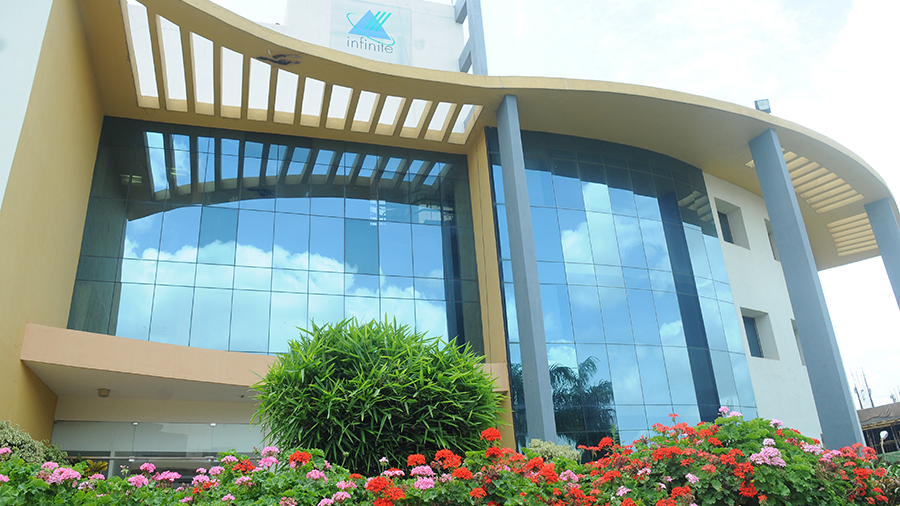

Juba Branch
Branch is the Main, capital and largest city of the Republic of South Sudan. The city is situated on the White Nile and also serves as the capital of Jubek State.
The Computer Company SamTech for ICT Solutions enables organizations to gain full advantage of IT to increase efficiencies, improve effectiveness, and reach new goals. Our Company team of highly experienced, knowledgeable technology and design professionals will work closely with you. We provide the analysis, expertise, tools, and monitoring to help you solve your toughest business challenges through IT solutions.